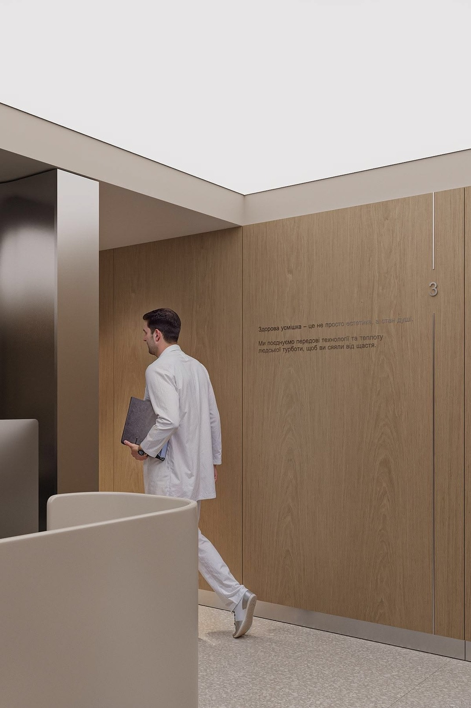

Build your name
Personal brand strategy for doctors who want to be known as specialists.
A dedicated healthcare brand and patient experience consultancy for doctors, founders and clinics.
Trusted by healthcare founders and clinic owners
Personal brand strategy for doctors who want to be known as specialists.

Brand and patient experience for a first clinic.

When the clinic looks like everyone else’s — or patients know you, not it.
We review your goals, customers, current brand and patient experience — so the problem is clear before any deliverable.
We set the positioning, proposition and experience the business needs to create. Direction before design.
We turn that direction into a working system, then lead the specialist team so brand, space, service and digital stay aligned.

“Working with Thao, I saw how her way of thinking brought clarity to a difficult healthcare challenge — and helped us find a direction that truly connected the brand with the patients we needed to reach.”
Prof. Mike Chan · Chairman, European Wellness Biomedical Group“I want to become better known as a specialist.”
Where Zerone enters · Professional“I’m opening my first clinic.”
Where Zerone enters · Founder“Patients know me, but not my clinic.”
Where Zerone enters · Business ownerVietnam market entry · Strategic & Project Director
New market. Complex healthcare. Trust had to come first. The proposition was still unfamiliar locally — especially in a sensitive conversation involving children and families.
“Vì Sức Khoẻ Tinh Thần Trẻ Em Việt Nam” — a locally relevant awareness platform built around education, expert voices and trust, rather than leading with the treatment.
500+ families reached nationwide. 3 earned media features. Awareness → engagement → revenue. Commercial conversion exceeded expectations.